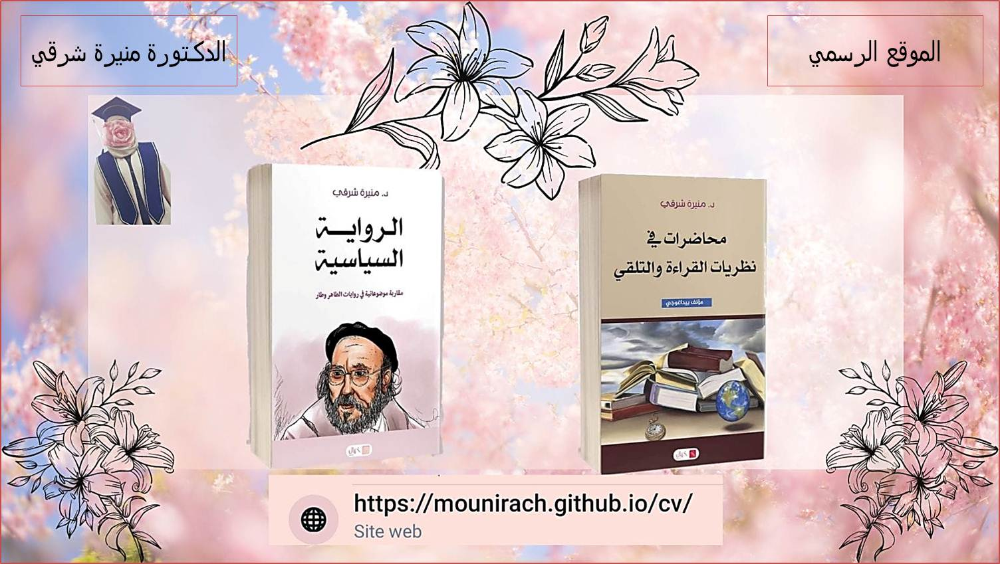
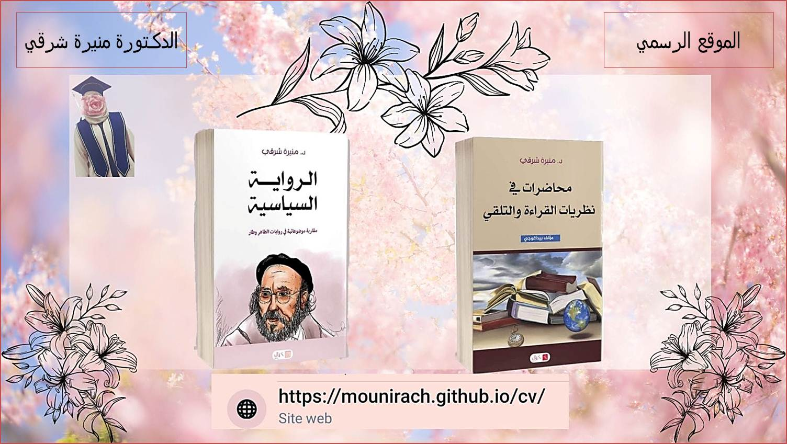

بعض مذكرات ماستر تم الإشراف عليها
عـنـــوان المذكـــرة |
إعـــداد الطلبـــة |
السنـــة الجامعيـــة |
تحميـــــل |
|---|---|---|---|
| الاغتراب في رواية أرهقتني المكسيك يا ماروشكا لديراو داتسيدا | شارع جنات، رحموني شهيناز | 2022- 2023 | اضغط هنا |
| الذات والآخر في النقد النسوي " الرواية النسوية العربية مساءلة الأنساق وتقويض المركزية" لِـ: عصام واصل أنموذجا. | سعدي شريفة، حباب سهيلة | 2019- 2020 | اضغط هنا |
| اضغط هنا |